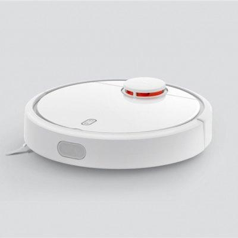

Dettagli sul prodotto
Il sensore di distanza a laser (LDS) scansiona i suoi dintorni a 360 gradi, 1800 volte al secondo, per mappare gli interni della tua casa. I tre processori tracciano i suoi movimenti in tempo reale e l'algoritmo Localizzazione e mappatura simultanee (SLAM) calcola il percorso più efficiente per la pulizia. Utilizzando l'app Mi Home, è possibile accendere e controllare a distanza il robot, cambiare modalità di pulizia e impostare programmi, Inoltre, un potente motore DC senza spazzole Nidec, la spazzola principale con altezza regolabile e una batteria Li-ion da 5200 mAh fino a 2,5 ore di pulizia, attraente nel prezzo e nella qualità, tutti questi lo distinguono dal mercato. Prendi il Mi Robot Vacuum e la sporcizia non ha nessuna possibilità! Guardalo in azione --> video
Specifiche del prodotto
|  Xiaomi MI Vacuum |